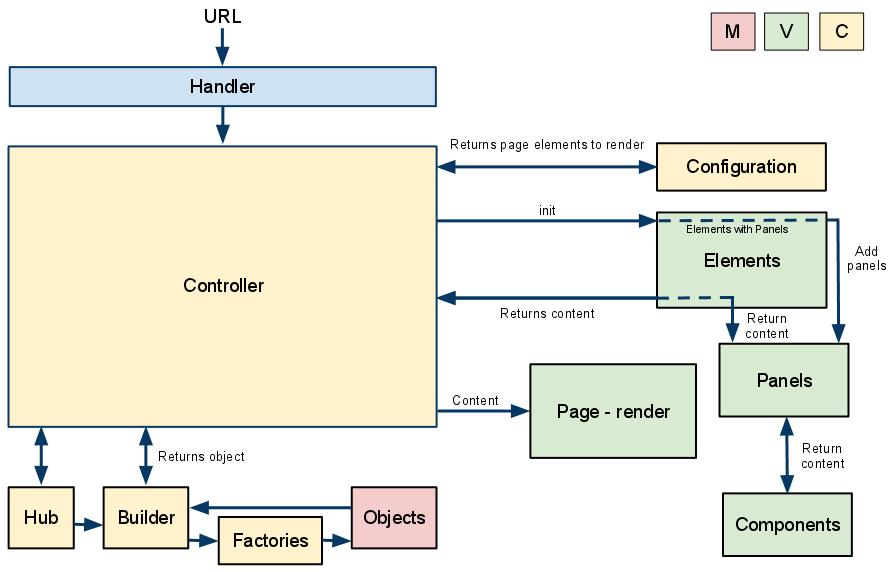

Dynamic (database-driven) web pages
Ensembl uses a complex structure of templating modules in order to create its pages.
The diagram below shows the process for constructing a dynamic page.
The code is loosely written using an MVC (Model/View/Controller) style, as shown by the colours of the boxes.

Using a human region in detail page as an example, the diagram can be explained as follows:
- URL
- http://www.ensembl.org/Homo_sapiens/Location/View?r=6:133017695-133161157
- Handler - Apache::SpeciesHandler
-
The initial E::W::Handler hands off either to the SpeciesHandler or the DASHandler for dynamic pages. Since this is not a DAS request, SpeciesHandler is used.
The URL is analyzed to choose the appropriate Controller.
- Controller - Controller::Page
-
The Page controller is used to generate the page. After it has been loaded, additional components will be requested via AJAX. These will use E::W::Controller::Component.
See here for a more detailed explanation of how the Controller module is chosen.
- Hub
- A holder for all the database connections, CGI parameters, session data, etc. required by any dynamic page
- Builder
- Creates a Factory for each CGI parameter which is linked to an Object, and stores the Objects generated
- Factories - Factory::Location
-
Parses the CGI parameters to generate an Object with the required data.
In this case, only a Factory::Location is generated. If the URL also contained, for example, a "g" parameter (e.g. g=ENSG00000139618), a Factory::Gene would be created too.
- Objects - Object::Location
- A wrapper for a Bio::EnsEMBL::Slice, containing functions required by the web code.
- Configuration - Configuration::Location
- Builds a tree of available pages for the current Location, from which the left-hand navigation menu is built. Also defines the set of components that belong to each page
- Elements - Document::Element::[Tabs, Logo etc]
- A series of more-or-less static modules which output HTML for various sections of the page template: logo, search box, footer, etc, as well as the left-hand navigation menu and top tabs
- Panels - Document::Panel
- A container for a set of Elements and/or Components
- Components (dynamic content modules)
- One or more modules attached to a Panel, each of which outputs a chunk of HTML and/or images
- Page - Document::Page
- Takes HTML output from Elements, Panels and Components, puts them into the whole page template, and renders the page
Next: Creating a simple custom page